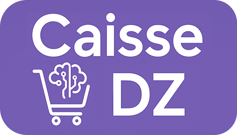

Présentation fonctionnelle détaillée
Workflow & Fonctionnement
Module par module : à quoi il sert, ses champs et actions, ses scénarios d'usage réels — avec une capture d'écran de l'application pour chacun, et un focus sur les fonctions intelligentes (reconnaissance produit, OCR, application mobile).
CaisseDZ · Document de présentation · 2026
Vue d'ensemble
Un cycle complet, du stock à la caisse
CaisseDZ couvre tout le parcours d'un commerce de détail : l'arrivée de la marchandise, sa vente au comptoir, le suivi des tiers (clients/fournisseurs), et le pilotage grâce aux rapports — sur un seul poste, sans connexion Internet obligatoire. Trois fonctions intelligentes (reconnaissance produit, OCR de documents, application mobile) viennent alimenter ce cycle à plusieurs endroits.
🔎 Reconnaissance produit (code-barres)
📄 SmartScan OCR (devis / bons)
📱 Application mobile CaisseDZ Scanner
↓ alimentent le cycle principal ↓
1. Stock
Réception fournisseur (manuelle ou OCR), mise en stock automatique
→
2. Catalogue
Produits, packs, remises — créés manuellement ou reconnus automatiquement
→
3. Vente
Panier, remise, encaissement au comptoir
→
4. Tiers
Clients, fournisseurs, versements, retours
→
5. Pilotage
Tableau de bord, rapports, historique
↓ modules satellites, déclenchés depuis le cycle principal ↓
Besoin (déclenché par une rupture de Stock)
Retour (déclenché depuis Panier ou Entrée)
Versement (règlement Client/Fournisseur)
Gestion Caisse (ouverture/clôture encadrant toute Vente)
Structure des modules
🛒
Ventes
Caisse, Panier, Retour
📦
Stock
Produit, Stock, Entrée, Sortie, Magasin, Besoin
👥
People
Client & Fournisseur (avec Versements), Utilisateur
⚙️
Autre
Gestion Caisse, Zakat, Paramètre, Historique, Dashboard
Avant de commencer
Fonctions générales
Les capacités transversales de CaisseDZ, présentes à travers tous les modules détaillés dans la suite de ce document.
🖥️
Point de vente complet
Caisse multi-paniers, scan code-barres, remises, plusieurs modes de paiement.
📦
Stock en temps réel
Quantité toujours recalculée depuis le journal des mouvements, jamais saisie à la main.
🏬
Multi-magasins
Plusieurs points de vente, stock séparé par magasin, transferts tracés entre eux.
👤
Multi-utilisateurs
Comptes individuels, rôles personnalisables, caisse verrouillée par utilisateur.
💳
Vente au comptant ou à crédit
Ticket immédiat ou facture (BL/SC) avec solde client suivi dans le temps.
🏷️
Remises flexibles
Par produit (automatique) ou par montant du panier (manuelle en caisse).
📦
Vente par palier
Prix différent à l'unité, par boîte ou par carton — détail, semi-gros, gros.
🧩
Packs produits
Vente groupée de plusieurs produits à des quantités définies, à prix dédié.
🔁
Retours & annulations
Retour client ou fournisseur, annulation tracée avec motif, stock republié.
🧮
Comptabilité de caisse
Sessions d'ouverture/clôture, écarts calculés, clôtures fiscales horodatées.
🕌
Calcul de la Zakat
Agrégation automatique du capital commercial (stock, liquidités, créances, dettes).
📜
Audit complet
Chaque création/modification/suppression journalisée avec auteur et horodatage.
📊
Rapports & tableau de bord
KPI du jour, marges, recettes par produit/panier, mouvements, inventaire.
🖨️
Export & impression
PDF et Excel sur la quasi-totalité des tableaux, tickets imprimables.
💾
Sauvegarde locale
Sauvegarde automatique planifiable, restauration en un clic.
🌐
Multilingue
Français, Anglais, Arabe (avec interface adaptée de droite à gauche).
Avant de commencer
Fonctions intelligentes
Trois fonctions à base d'intelligence artificielle ou de connectivité, qui font gagner un temps considérable à la saisie et s'intègrent directement aux modules Produit, Entrée et Caisse.
1
Reconnaissance de produit par code-barres
Depuis le mode « IA » de la création de produit : scanner (ou saisir) un code-barres déclenche une recherche en cascade sur plusieurs sources, dans l'ordre, jusqu'à trouver une correspondance — fiche pré-remplie (nom, marque, catégorie, photo) à valider par l'utilisateur.
Base locale
(produits déjà créés)
→
Catalogue CaisseDZ
(partagé entre installations)
→
Mantouj
(GS1 Maghreb)
→
Open Food Facts
→
Open Beauty Facts
2
SmartScan — OCR des devis et bons de livraison
Dans le module Entrée : une photo d'un devis ou bon de livraison fournisseur est analysée automatiquement (reconnaissance de texte puis extraction intelligente) pour en ressortir chaque ligne produit avec sa quantité et son prix — l'utilisateur n'a plus qu'à valider/corriger avant d'enregistrer l'entrée en stock, au lieu de ressaisir chaque ligne à la main.
📷 Photo du document
→
Lecture du texte (OCR)
→
Extraction des lignes
(produit, qté, prix)
→
Rapprochement avec
le catalogue existant
→
Validation par
l'utilisateur
3
Application mobile compagnon — CaisseDZ Scanner
Une application mobile se connecte au poste CaisseDZ (appairage par QR code, sur le même réseau local) et devient une douchette/scanner déporté : elle permet de scanner des codes-barres et consulter le catalogue depuis le rayon, et d'envoyer directement au PC des photos de bons de réception ou de devis pour le SmartScan — sans avoir à transporter de papier jusqu'à la caisse.
📱 Scan code-barres
ou photo du document
→
Envoi via le réseau local
(Wi-Fi, appairage QR code)
→
Réception sur le poste
CaisseDZ (Entrée / Produit)
Étape 0
Mise en route
Connexion sécurisée, puis un menu de lancement rapide donne un accès direct à n'importe quel module dès l'ouverture de session.
Menu de lancement rapide (après connexion)
Rôles & permissions
Chaque utilisateur a un rôle (Admin, Caissier, Magasinier, Gérant...) qui détermine les modules visibles dans la barre latérale et les actions autorisées — un caissier vend, un magasinier gère le stock, l'admin voit tout et configure l'application. Un utilisateur non-admin peut être verrouillé sur une caisse précise. Le détail de la personnalisation des rôles est couvert page Utilisateur.
Organisation de la barre latérale
🛒
Ventes
Caisse · Panier · Retour
📦
Stock
Produit · Stock · Entrée · Sortie · Magasin · Besoin
👥
People
Client · Fournisseur · Utilisateur
⚙️
Autre
Gestion Caisse · Zakat · Paramètre · Historique
Ventes
Caisse
L'écran de vente au comptoir (point de vente) : c'est ici que le caissier encaisse les clients au quotidien, ajoute des produits au panier, applique des remises et encaisse le paiement.
Écran principal
Confirmation d'ajout — choix du mode d'achat
Vente au détail, semi-gros ou en gros
À l'unité (détail)
Prix à la pièce — vente classique au comptoir.
Par boîte (semi-gros)
Prix dégressif pour un lot de pièces (ex. 6 pièces/boîte).
Par carton (gros)
Prix le plus avantageux pour un gros volume (ex. 60 pièces/carton).
Champs clés
ClientProduits (nom/prix/qté)Mode d'achat (unité/boîte/carton)
Mode de paiementRemiseMontant totalN° ticket
Actions disponibles
Nouveau client (C)Nouveau produit (N)Entrée rapide (E)
Pack (Ctrl+P)Remise par montant (Ctrl+R)Encaisser Ticket (F4)
Encaisser Facture (F5)Enregistrer (F6)Annuler (F9)Vider (F10)
Scénarios d'usage
1Client avec articles : scan code-barres → ajout auto au panier avec vérification du stock → encaissement (F4) → ticket imprimé.
2Client professionnel achetant en gros : à l'ajout du produit, choix « Par carton » — prix et stock décomptés en conséquence.
3Panier dépassant un certain montant : application d'une Remise par montant (Ctrl+R), en plus des remises déjà actives par produit.
Ventes
Panier
L'historique des tickets/paniers déjà vendus en caisse — la trace de toutes les ventes passées.
Sous-modules
Écran unique (tableau + filtres)
Champs clés
CodeDateClientCaissier
Type (Ticket/BL/BL_SC)MontantMargeReste à payer
Actions disponibles
DétailModifierAnnuler (motif)
FiltrerExtraire Excel
Scénarios d'usage
1Un client conteste un ticket : recherche du panier concerné puis consultation du Détail avec la liste des produits vendus.
2Vente saisie par erreur : sélection du panier puis Annulation avec motif — le stock vendu est republié.
3Analyse des ventes à crédit non soldées : filtre par type « BL/BL_SC » et par « reste » pour cibler les paniers dus.
Ventes
Retour
La gestion des retours de marchandises, aussi bien ceux effectués par un client (produit rapporté) que ceux effectués vers un fournisseur (produit défectueux renvoyé).
Sous-modules
ClientFournisseur
Champs clés
ProduitQuantitéPrix achat/vente
Type (Client/Fournisseur)Opération d'origineDate
Actions disponibles
Nouveau retourModifierAnnuler
DétailFiltrerExtraire Excel
Scénarios d'usage
1Client rapporte un produit défectueux : Retour Client lié au panier d'origine — stock remis à jour, remboursement possible via un Versement.
2La boutique renvoie un article défectueux : Retour Fournisseur lié à l'entrée d'origine — la dette envers ce fournisseur diminue.
3Erreur de saisie sur un retour : Annulation, qui republie le stock dans l'état d'avant retour.
Stock
Produit
Le catalogue des articles vendus par la boutique, avec leur organisation en catégories/sous-catégories, leurs remises et leurs packs (lots de produits vendus ensemble).
Sous-modules
ProduitCatégorieSous-catégorieRemisePack
Champs clés
NomCode / Code-barreMarqueCatégorie/Sous-catégorie
Prix achat/venteMarge (auto)TVAEmballages (boîte/carton)Service (sans stock)
Actions disponibles
Nouveau (3 modes)ModifierSupprimerDétail
Générer code-barresFiltrerExtraire ExcelAssigner catégorie/remise/pack en masse
Pack & remise par produit
🧩
Pack
Regroupe plusieurs produits (chacun avec sa propre quantité) dans une seule référence vendable à un prix dédié — pratique pour les lots/promotions. Un Pack s'ajoute au panier en un clic (raccourci Ctrl+P en caisse) et décrémente le stock de chaque produit qui le compose.
🏷️
Remise par produit
Une Remise de type « Par Produit » est assignée directement sur la fiche produit (champ dédié) : elle s'applique ensuite automatiquement dès que ce produit est ajouté au panier en caisse, sans aucune action du caissier — différente de la remise par montant, saisie manuellement au moment de l'encaissement.
Trois façons de créer un produit
🧠 Mode Smart (IA)
Scan ou saisie du code-barres → recherche automatique dans le catalogue CaisseDZ, puis des bases publiques (Mantouj, Open Food Facts, Open Beauty Facts) → fiche pré-remplie (nom, marque, catégorie, photo) à valider.
⚡ Mode Rapide
Formulaire court : nom, prix d'achat/vente, catégorie, code-barres, unité — l'essentiel pour mettre un produit en vente en quelques secondes.
📋 Mode Détaillé
Formulaire complet à onglets : infos générales, catégorie & remise, prix & taxes, stock & emballages, codes-barres multiples, packs — pour une fiche produit exhaustive.
Un produit sans code-barres peut s'en voir attribuer un automatiquement (préfixe CDZ + date + numéro), avec QR code imprimable. L'option « Service » désactive le suivi de stock pour ce produit (prestations, articles non physiques) ; le prix de vente peut aussi être calculé automatiquement à partir du prix d'achat et du taux de marge souhaité.
Stock
Stock
La vue consolidée du stock disponible par produit et par magasin, ainsi que le journal détaillé de tous les mouvements de stock (entrées, sorties, ventes, retours, transferts).
Sous-modules
Stock (produits)Mouvement (journal)
Champs clés
ProduitQuantité en stock (par magasin)Seuils min/max
Type mouvementClient/Fournisseur lié
Actions disponibles
Détail produitDétail mouvementFiltrerExtraire Excel
Scénarios d'usage
1Vérifier la disponibilité réelle d'un article avant une grosse commande : consultation du Stock filtré par magasin.
2Un écart de stock est suspecté : consultation du journal des Mouvements filtré par produit et par période pour retracer chaque entrée/sortie.
3Alerte de rupture : un produit sous le seuil minimum apparaît visuellement mis en évidence dans le tableau Stock.
Stock
Entrée (SmartScan)
L'enregistrement des réceptions de marchandises fournisseurs, en saisie manuelle ou via scan intelligent assisté par IA (reconnaissance de devis/bon de livraison).
Sous-modules
SmartScan (entrées classiques + scans)AI (réception assistée par IA)
Champs clés
FournisseurProduitQuantité
Prix achat/venteMontant totalSolde restant dû
Actions disponibles
Nouvelle entréeSmartScan OCR (devis/bon)Entrée rapide
ModifierAnnulerConnexion appli mobileFiltrerExtraire Excel
SmartScan — de la photo à l'entrée de stock
Au lieu de ressaisir chaque ligne d'un devis ou bon de livraison papier, une photo du document (prise directement ou reçue depuis l'application mobile) est analysée automatiquement : le texte est extrait, chaque ligne produit (nom, quantité, prix) est reconnue et rapprochée du catalogue existant. L'utilisateur valide ou corrige la liste proposée, puis enregistre — le stock et le solde fournisseur sont mis à jour comme pour une entrée classique. Voir la page « Fonctions intelligentes » pour le détail du mécanisme.
Scénarios d'usage
1Réception avec bon papier simple → saisie manuelle d'une Entrée, le stock est mis à jour automatiquement.
2Livraison volumineuse avec devis détaillé → photo du document, SmartScan en extrait automatiquement toutes les lignes produits.
3Un magasinier au rayon prend en photo le bon via l'application mobile → le document arrive directement dans l'Entrée du poste CaisseDZ.
Stock
Sortie
L'enregistrement des sorties de stock qui ne sont pas des ventes classiques : produits périmés, donnés, ou sortis pour une autre raison (perte, casse, usage interne).
Sous-modules
Panier (rappel des ventes)Sortie
Champs clés
ProduitQuantitéPrix
Type (Expiration/Don/Autre)MagasinObservation
Actions disponibles
Nouvelle sortieModifierAnnulerDétailFiltrerExtraire Excel
Scénarios d'usage
1Des produits arrivent à expiration : Sortie de type « Expiration » qui déstocke définitivement ces articles.
2Don de marchandise à une association : Sortie de type « Don » avec observation, pour garder une trace comptable.
3Casse constatée en rayon : Sortie de type « Autre » avec le motif détaillé en observation.
Stock
Magasin
La gestion des points de vente/entrepôts physiques (pour les commerces multi-magasins) et des transferts de marchandises entre eux. Réservé au palier de licence « Avancé ».
Sous-modules
MagasinsTransferts
Champs clés
NomCodeAdresseÉtat
Actions disponibles
Nouveau magasinModifierSupprimerDétail
Nouveau transfertAnnuler transfert
Scénarios d'usage
1Ouverture d'une nouvelle boutique : création d'un nouveau Magasin, sélectionnable ensuite partout dans l'application.
2Un magasin est en rupture d'un produit disponible ailleurs : Transfert entre magasins, générant deux mouvements de stock liés.
3Un transfert saisi par erreur : Annulation, ce qui republie le stock correctement dans les deux magasins.
Stock
Besoin (Liste de besoins)
L'écran de préparation des commandes fournisseurs : lister ce qu'il faut racheter, en s'appuyant sur les produits en rupture ou proches de la péremption.
Sous-modules
Liste de besoinsProduits en ruptureProduits expirés
Champs clés
FournisseurDateMontantQuantité totaleNombre d'articles
Actions disponibles
Nouvelle liste de besoinsDétail produit
Scénarios d'usage
1Consultation de l'onglet « Produits en rupture » pour repérer les articles sous le seuil minimum.
2Création d'une nouvelle Liste de besoins pour un fournisseur donné, avec les quantités à commander.
3Contrôle des produits proches de péremption pour anticiper des sorties « Expiration » ou des promotions d'écoulement.
People
Client & Fournisseur
Deux modules miroirs — même structure, mêmes fonctionnalités — l'un pour le carnet clients, l'autre pour le carnet fournisseurs. Chacun suit son historique d'achats/ventes, ses versements, et son solde de crédit.
Module Client
Module Fournisseur (structure identique)
Sous-modules (les deux)
Client / FournisseurVersement
Champs clés
NomTéléphone / EmailAdresse / Wilaya
TypeActivitéSolde de crédit
Actions disponibles
NouveauModifierSupprimerDétail
SituationFiltrerExtraire Excel
L'onglet Versement
Chaque module a son propre onglet Versement pour suivre les mouvements d'argent avec ce tiers : un paiement reçu d'un client (encaissement d'une dette) ou un paiement versé à un fournisseur (règlement d'une facture), mais aussi avances, remboursements ou retours de versement. Chaque versement peut être rattaché à l'opération d'origine (panier, entrée, retour) et met immédiatement à jour le solde de crédit affiché sur la fiche du tiers.
Scénarios d'usage
1Un client a acheté à crédit → il revient régler sa dette → un Versement est enregistré et son solde diminue.
2Réception d'une livraison → la dette envers le fournisseur augmente → un Versement de règlement est enregistré plus tard.
3Contrôle de l'exposition financière : ouverture de la Situation (client ou fournisseur) pour voir le total échangé et le crédit restant dû.
People
Utilisateur
La gestion des comptes du personnel (caissiers, magasiniers, admin) et des rôles sur-mesure qui définissent précisément ce que chacun a le droit de voir et de faire dans l'application.
Sous-modules
UtilisateurRôle
Champs clés
Nom d'utilisateurMot de passeRôle
Caisse attachéeCrédit
Actions disponibles
NouveauModifierSupprimerDétail
Extraire ExcelCréer un rôle personnalisé
Des rôles entièrement personnalisables
Au-delà des rôles standards (Admin, Caissier, Magasinier), un Rôle personnalisé se construit à partir de deux niveaux de permissions indépendants, cochés au cas par cas :
Accès par module (visibilité dans la barre latérale)
DashboardCaissePanierProduit
ClientFournisseurEntréeSortie
RetourStockBesoinUtilisateur
Gestion CaisseZakatParamètreHistorique
Permissions spéciales (actions sensibles)
Voir le prix d'achatVoir la marge
Modifier le prix de venteAnnuler des opérations
Changer de caisse/magasinGérer les transferts de caisse
Voir le stock de tous les magasins
Scénarios d'usage
1Embauche d'un caissier : rôle « Caissier » standard, sans accès au prix d'achat ni à la marge, avec une caisse attachée.
2Un responsable de rayon doit voir le stock de tous les magasins sans gérer les utilisateurs : création d'un rôle sur-mesure combinant juste ces permissions.
3Départ d'un employé : désactivation de son compte pour couper l'accès sans perdre l'historique de ses opérations.
Autre
Gestion Caisse
Le back-office des caisses physiques/comptes de la boutique : création des caisses, transferts d'argent entre elles, clôtures journalières (rapport Z) et suivi des sessions d'ouverture/fermeture.
Sous-modules
CaisseTransfertClôtureMouvementSession
Champs clés
Nom caisseMagasinType (Physique/Compte)Solde initial
Statut sessionSolde théorique/réelÉcart
Actions disponibles
Nouvelle caisseModifier / SupprimerNouveau transfert
Nouvelle clôture (PDF + export fiscal)
Scénarios d'usage
1Fin de journée : le caissier compte sa caisse, une Clôture compare le solde théorique (calculé) au solde réel compté, écart mis en évidence.
2Une caisse manque de liquide : un Transfert d'argent est effectué depuis une autre caisse.
3Ouverture de journée : une Session est ouverte avec un solde de départ ; toute vente est bloquée tant qu'aucune session n'est ouverte.
Autre
Zakat
Un outil de calcul de la zakat (aumône légale islamique obligatoire) due sur le capital commercial de la boutique, selon les règles religieuses (nissab, hawl).
Sous-modules
Écran unique
Champs clés
AnnéeStock / Liquidités / Créances / DettesCapital total
Seuil nissabTaux (2,5%)Montant zakatStatut payée/non payée
Actions disponibles
Nouveau calculModifierDétailSupprimerFiltrerExtraire Excel
Scénarios d'usage
1Fin d'année comptable : nouveau calcul créé, le système agrège stock/liquidités/créances/dettes automatiquement.
2Le capital dépasse le seuil nissab : le montant dû est calculé et marqué « obligatoire ».
3La zakat est versée à une association : le calcul est mis à jour avec la date de paiement, statut « payée ».
Autre
Paramètre
La configuration générale de l'application : réglages système, informations de la boutique, et connexions avancées (multi-magasin, synchronisation).
Sous-modules
SystèmeMagasin (infos/imprimante/sauvegarde)Avancé (multi-magasin)
Paramètres système disponibles
Langue (FR / EN / AR)DeviseDécimales de quantité
Type de marge (Montant ou Pourcentage)Taux de marge par défaut
Seuil de stock minimumSeuil de stock maximum
Autres réglages
Modes de paiement actifsProgramme de bonus/fidélitéInfos entreprise (ticket)
Configuration imprimanteSauvegarde automatique
Scénarios d'usage
1Ouverture initiale de la boutique : configuration des informations d'entreprise (nom, adresse, NIF) qui apparaîtront sur les tickets.
2Choix du mode de calcul des marges (en pourcentage ou en montant fixe) et du taux par défaut appliqué aux nouveaux produits.
3Sécurisation des données : configuration d'un dossier de sauvegarde automatique quotidien, avec restauration possible en cas de problème.
Autre
Historique
Le journal d'audit de toutes les actions effectuées dans l'application (créations, modifications, annulations), utile pour tracer qui a fait quoi et quand.
Sous-modules
Écran unique
Champs clés
Type (table concernée)Opération (insertion/modification/annulation)
CodeDescriptionDateUtilisateur auteur
Actions disponibles
DétailFiltrer (type, opération, période, utilisateur)Recherche
Scénarios d'usage
1Un prix de produit a changé de façon inattendue : recherche dans l'Historique par produit pour voir qui l'a modifié et quand.
2Contrôle de conformité : filtrage de l'historique sur une période donnée pour vérifier les annulations effectuées par un caissier.
3Désaccord avec un client : consultation du Détail d'une opération pour retracer précisément la modification effectuée.
Pilotage
Dashboard (avec l'onglet Situation)
Le tableau de bord général de l'activité : indicateurs clés du jour (ventes, achats, dettes) et, dans l'onglet Situation, des rapports d'analyse détaillés par période.
Sous-modules
SituationDashboard
Mouvement CaisseMouvement ProduitRecette PanierRecette Produit
Marge PanierMarge PériodeInventaireSituation ClientSituation Fournisseur
Champs clés / KPI
Ventes jour/veilleAchats du jourNet du jour
Dette fournisseursCrédit clientsProduits en rupture
Actions disponibles
Changer la période d'analyseNaviguer entre les rapports
Scénarios d'usage
1Le gérant arrive le matin : consultation du Dashboard pour les ventes de la veille, la dette fournisseurs et le crédit client accumulé.
2Analyser la rentabilité d'une période précise : changement de période puis Situation > « Marge par Période ».
3Contrôle des performances de l'équipe : répartition du chiffre d'affaires par caissier pour identifier le meilleur vendeur.
Pour conclure
Sécurité, conformité & fonctionnement hors-ligne
Un socle technique pensé pour un commerce réel : résister à un contrôle, fonctionner sans connexion, et rester simple à utiliser au quotidien.
Sécurité & traçabilité
🧾
Registre fiscal inviolable
Écriture append-only (jamais modifiée a posteriori), consultable par module Historique et Clôtures.
🔏
Clôtures horodatées & hashées
Chaque rapport Z est figé au moment de sa création — impossible à retoucher après coup.
📜
Journal d'audit complet
Chaque création, modification ou suppression est tracée avec l'utilisateur et l'horodatage (module Historique).
Fonctionnement au quotidien
🔌
Sans connexion Internet obligatoire
L'application fonctionne en local ; seules les fonctions Smart (reconnaissance, OCR) nécessitent une connexion ponctuelle.
🖥️
Un poste, plusieurs rôles
Comptes et permissions personnalisables séparent proprement ce que chacun peut faire.
💾
Sauvegardes automatiques
Dossier de sauvegarde configurable, fréquence automatique, restauration en un clic en cas de besoin.